Biei
Biei · Hokkaido
Biei
Highlighted on the Hokkaido map.
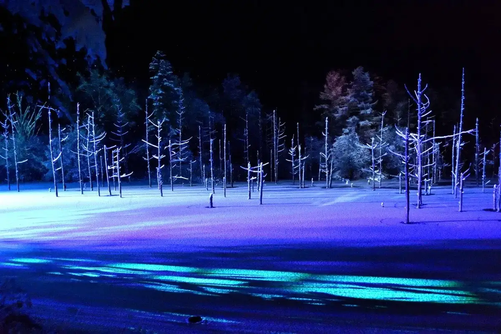
Stay
ＵＵＨＯＭＥ
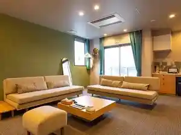
U U H O M E
星の光の宿 BIEI
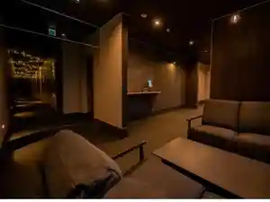
Hoshi No Hikari No Yado Biei
コンドミニアムびえい中町
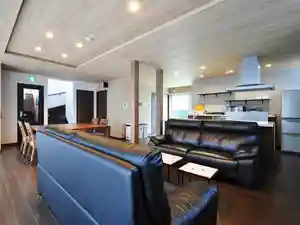
Kondominiamu Biei Nakamachi
美瑛コンフォートハウス
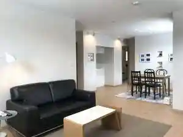
Biei Konfootohausu
ホテルラヴニール
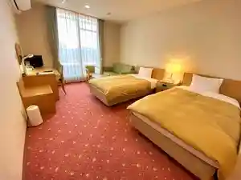
Hoteruravuniiru
ヴァンテアン舎
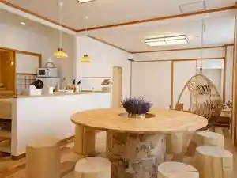
Vantean Sha
プチホテル ピエ
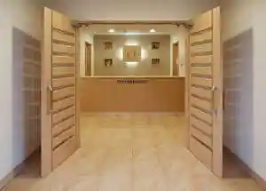
Puchihoteru Pie
丘の宿 こえる
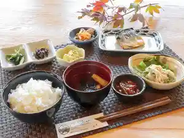
Oka No Yado Koeru
ルレ ドゥ 美瑛幸町
Rure Dou Biei Saiwaichou
クレス
Kuresu
くつろぎの宿 結び家
Kutsurogino Yado Musubi Ie
フォテージイン美瑛
Foteejiin Biei
Dining
焼肉処千之月
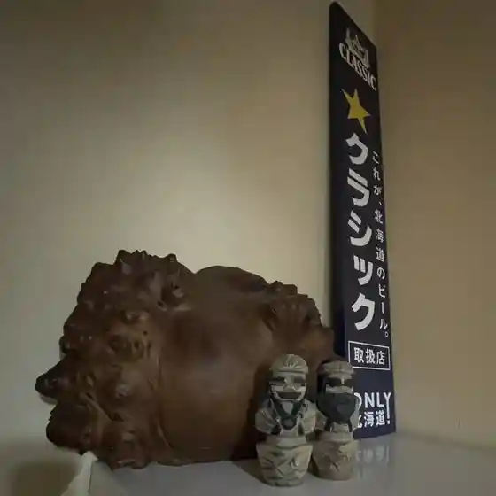
Yakiniku Tokoro Kazuyuki Gatsu
Sim Restaurant&Food Lab
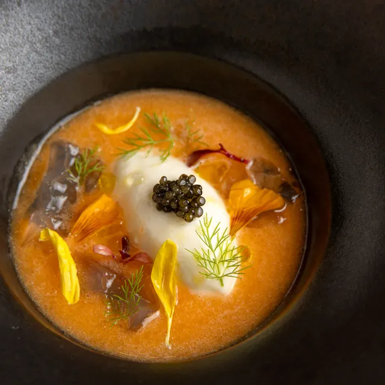
Sim Restaurant&Food Lab
焼き肉処 匠味屋
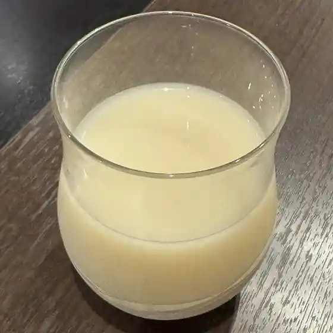
Yakiniku Tokoro Takumi Ya
あるうのぱいん
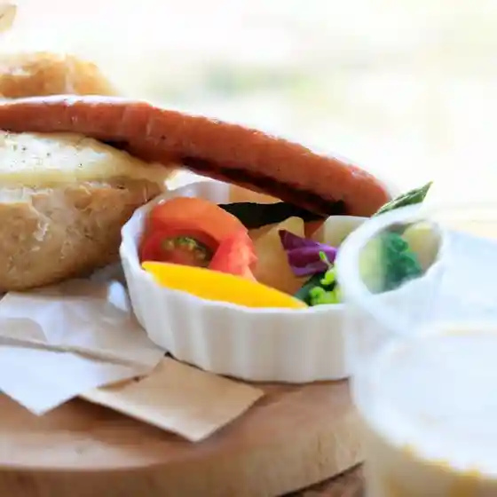
Aruunopain
自家焙煎珈琲店Gosh
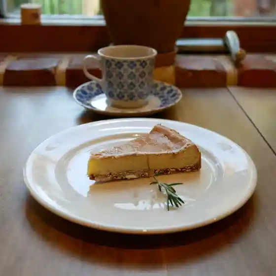
Jika Baisen Koohii Mise Gosh
ビルケの森 レストスタンド からまつ
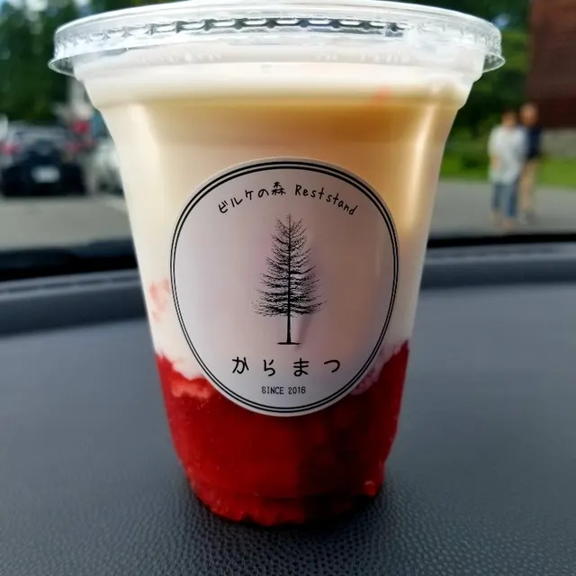
Biruke No Mori Resutosutando Karamatsu
夢の丘 ペンション麦（ばく）

Yume No Oka Penshon Mugi ( Baku )
星の庵
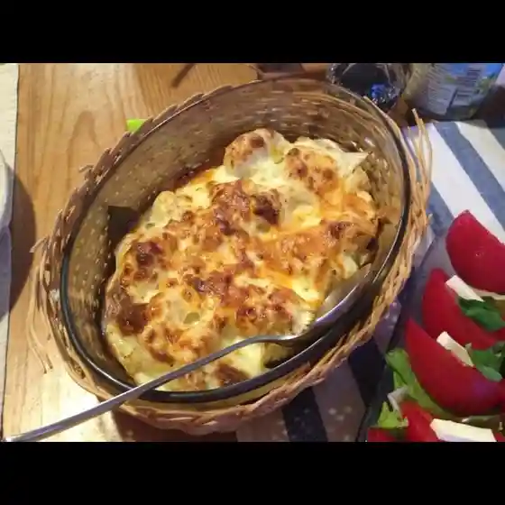
Hoshi No Iori
DAILY POP!
Daily Pop !
木のうた
Ki Nouta
花輪食品店 自販機コーナー
Hanawa Shokuhin Mise Jihanki Koonaa
ペンション風花
Penshon Kazabana
RONENAI BASE.
Ronenai Base .
仲まちプラス
Naka Machi Purasu
うねうね畑とくもの月
Uneune Hatake Tokumono Gatsu
弁当・惣菜店のりたつ
Bentou Souzai Mise Noritatsu
SSAW BIEI
Ssaw Biei
ビブレ ブーランジェリー
Bibure Buuranjierii
とぅもろう
Toumorou
遊岳荘
Yuu Gaku Sou
又鬼
Mata Oni
ムスタッシュ ボス
Musutasshu Bosu
ビトウィーン ザ ブレッド
Bitouiin Za Bureddo
LAWSON 美瑛大町二丁目店
Lawson Biei Oomachi Nichoume Mise
Sights
Shirogane Aoi Ike
Shirogane Aoi Ike
Blue Pond in Shirogane, Biei: mineral-rich water formed after volcanic mudflow works, reflecting a vivid blue.
Tokachi Gaku Bogaku Dai
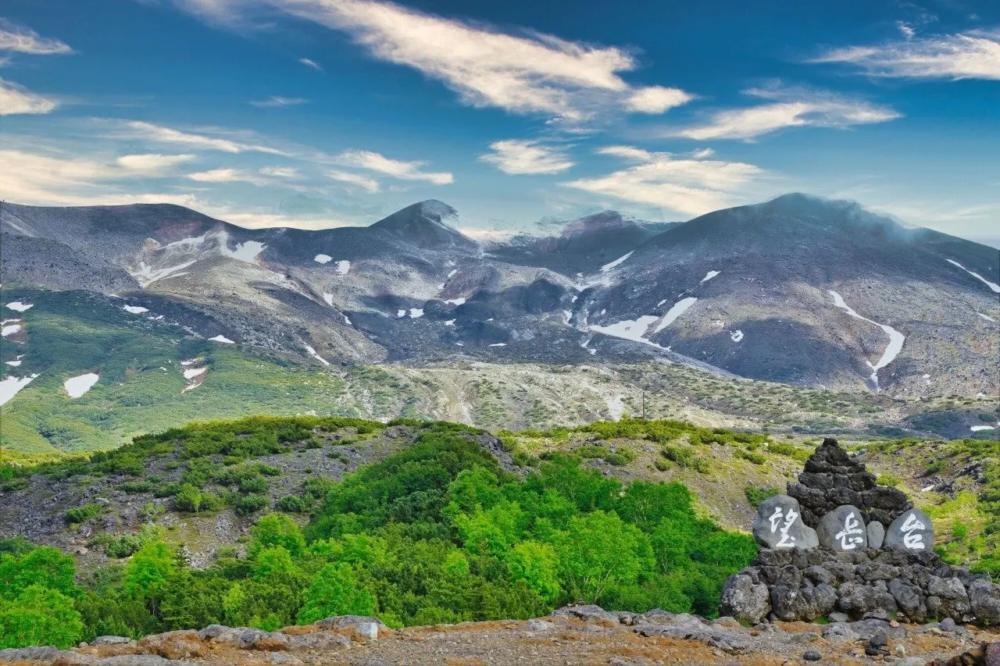
Tokachi Gaku Bogaku Dai
Tokachidake observation deck with volcanic rock slopes, alpine plants, and close views of the steaming volcano.
Shiki Sai no Oka
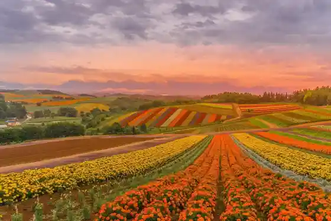
Shiki Sai no Oka
Shikisai-no-Oka flower gardens on about 15 ha of Biei hillsides, with banded seasonal blooms over the patchwork fields.
Shiro Hige Falls
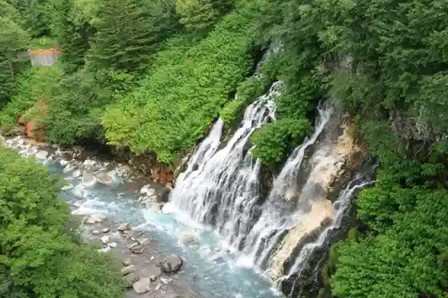
Shiro Hige Falls
Shirahige Falls at Shirogane Onsen: groundwater cascades about 30 m into the Biei River from cliff faces.
Sebunsuta no Ki
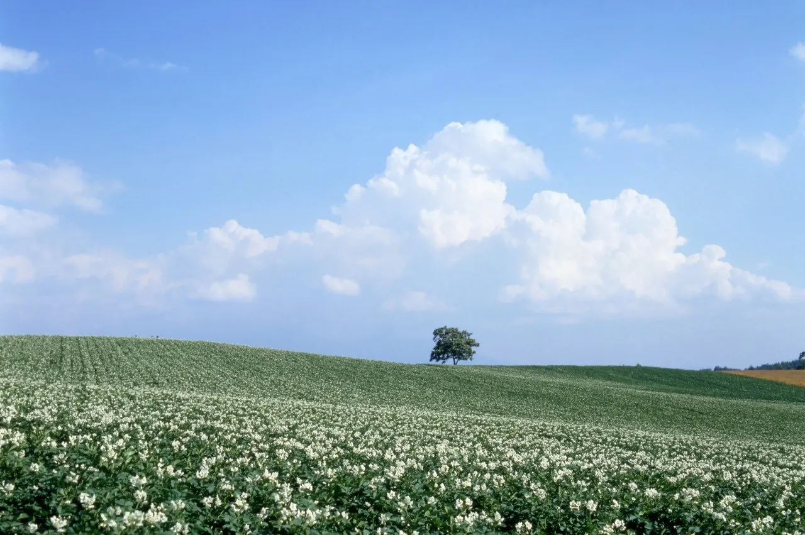
Sebunsuta no Ki
A lone Japanese oak on Biei patchwork hills, widely known after a 1976 cigarette-package design.
Shin'ei no Oka Tembo Park
Shin'ei no Oka Tembo Park
Shin-ei-no-Oka viewpoint park with open hill vistas toward the Tokachi range and western sunsets.
Zerubu no Oka
Zerubu no Oka
Zerubu-no-Oka flower fields on Biei hills, with many seasonal flower varieties from late spring into autumn.
Shirakaba Kaido
Shirakaba Kaido
White-birch avenue along Route 966 from Michi-no-Eki Biei Birke toward Shirogane Onsen, about 4 km of pale trunks.
Biei Shrine
Biei Shrine
Biei Shrine in Higashi-machi, the municipal shrine listed on Hokkaido tourism pages.
Takuma Hall
Takuma Hall
Takushinkan photography gallery in Takushin, Biei, presenting landscape photographer Maeda Shinzo work.